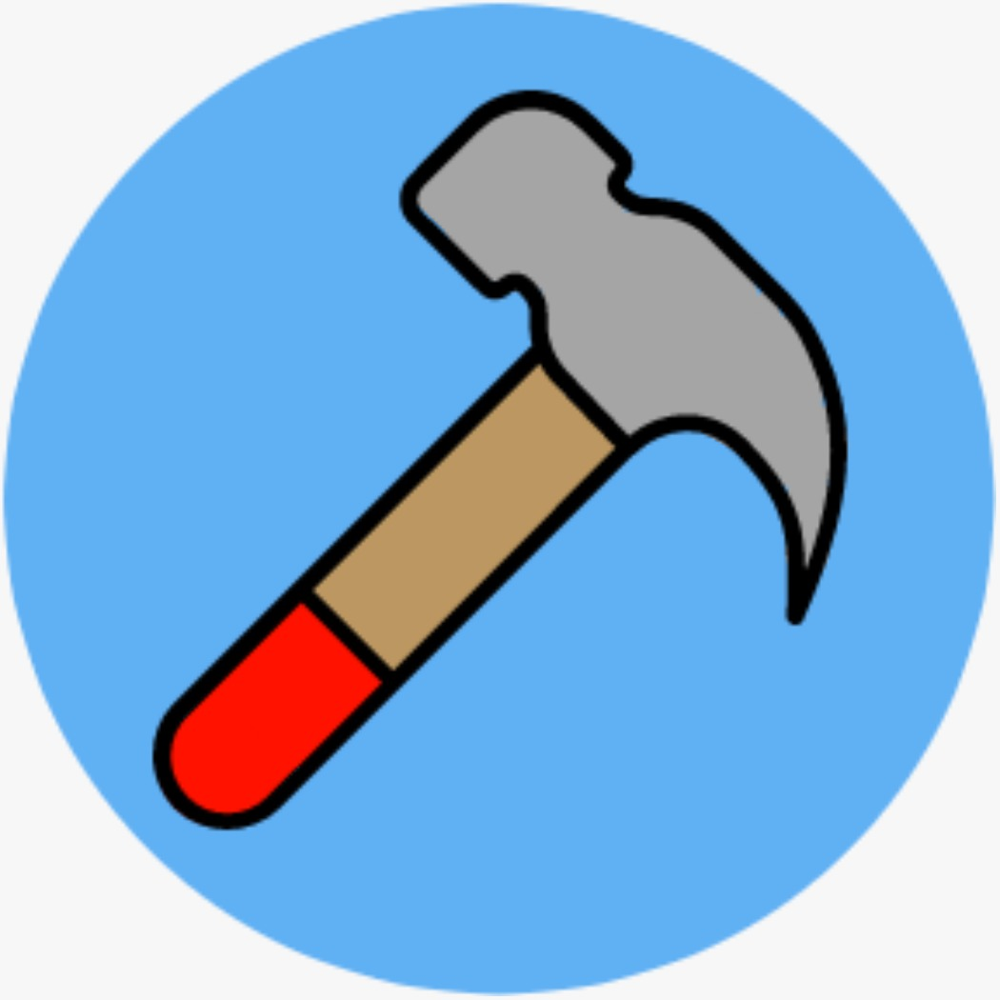
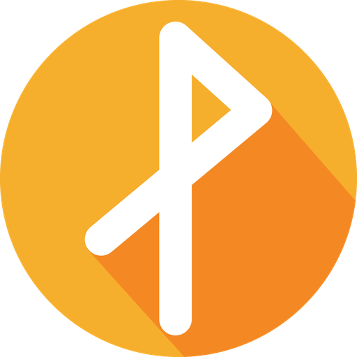
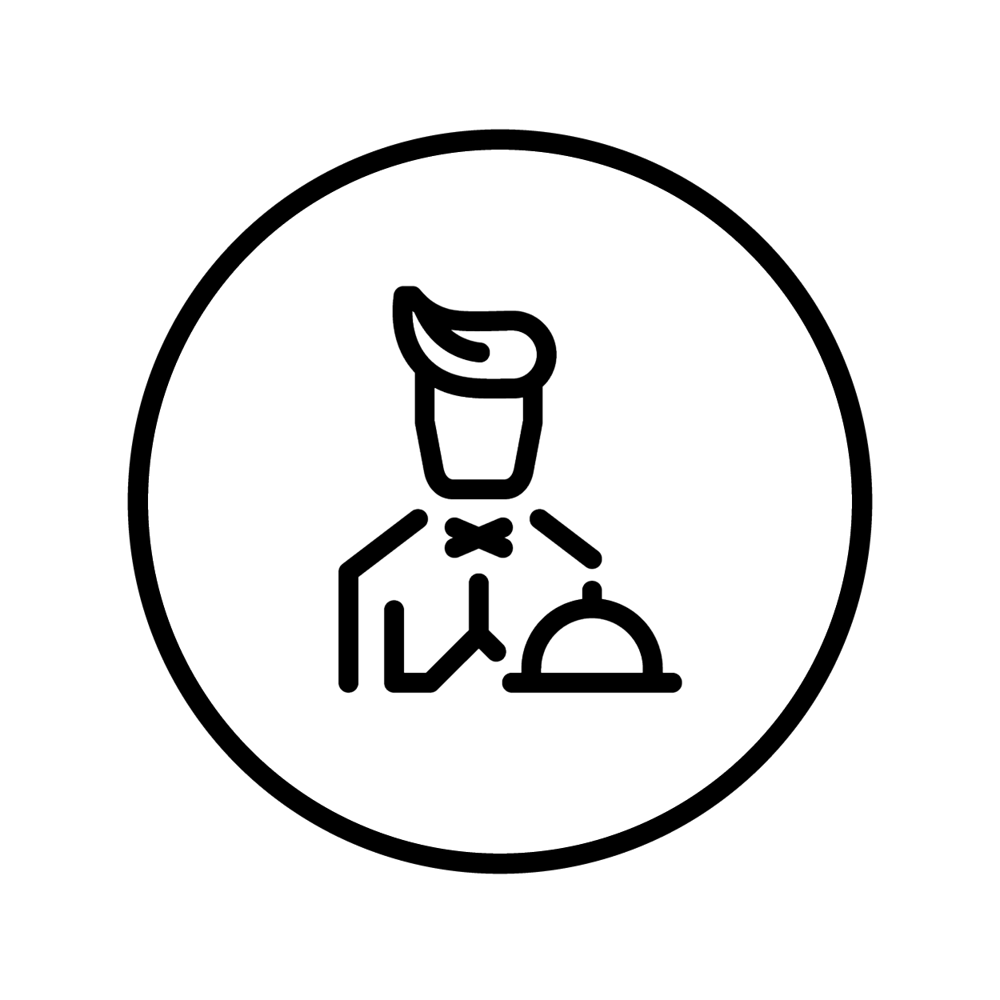
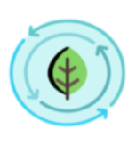

Horarios - En el ML 516
Horario de presentación y descripción de las aplicaciones.
-
8:10 - 8:35
Safeco
Alfonso Sanchez Camilo Alejandro
Cardona Muñoz Juan Sebastian
Ortiz Barbosa Diego Esteban
SafeCo is conceived as an alternative to give people a means to report an accident or crime in real time. Nonetheless these reports are saved and rendered in a Heat Map, in order to let people know what are the crime-related "hotspots" in their cities.
-
8:35 – 9:00
Child Monitor
Camacho Caro Juan Pablo
Camargo Urrego Javier Esteban
Hurtado Saenz Boris Alejandro
Molano Valencia Juan Esteban
Es una herramienta tecnológica que facilita el cuidar de niños, con esta se contará con la capacidad de monitorear sus movimientos, su ubicación y recibir notificaciones respecto a su posición; este monitoreo puede ser de tipo exterior por GPS o interior mediante el uso de Beacons. Si se llegase a presentar una emergencia el usuario tendrá diversas ayudas para localizar sus hijos y a si mismo recibirá una notificación en su dispositivo móvil.
-

9:00 - 9:25
Oddjobs
Cabello Agüero Eduardo Arturo
Gomez Gonzalez Nicolas
Martinez Piazuelo Felipe
Tamura Lara Jose Gabriel
Oddjobs es una aplicación móvil cuyo objetivo es facilitar el contacto entre personas que necesitan ayuda con labores ocasionales y personas capaces de ayudar con estas labores. La aplicación permite crear trabajos para los cuales es necesario especificar la recompensa, lugar, descripción del trabajo y una foto asociada si se requiere. Los usuarios tambien pueden buscar y filtar trabajos. Si se desea, el usuario puede postularse para realizar el trabajo. Entre otras funcionalidades, Oddjobs permite autenticación trabajador empleador y visualización de historial.
-

9:25 - 9:50
Psycho
Acevedo Correa Juan Santiago
Alegria Zuñiga Gustavo Adolfo
Villamizar Rodriguez Mariana
Los exámenes psicométricos son una parte importante del proceso de contratación de las empresas, pues sus resultados son útiles para determinar las habilidades de los aspirantes y su idoneidad para una vacante determinada. No obstante, la logística para realizar estas exámenes se complica por la cantidad de personal que se necesita para supervisarlas, la poca disponibilidad de espacios físicos, la amplia disposición de tiempo que se requiere y el consumo innecesario de papel para presentarlas. PsychoApp es una aplicación que facilita la presentación, publicación y calificación de exámenes basados en pruebas predefinidas, en la aplicación tanto aspirantes como empleadores podrán registrarse para facilitar el proceso de presentación de una prueba, los aspirantes podrán responder diferentes tipos de pruebas haciendo uso de los sensores de su dispositivo móvil y los empleadores podrán calificar dichas pruebas y generar reportes, facilitando el proceso de selección de empleados.
-

9:50 - 10:00
Break
Receso de 10 minutos. Ya volvemos.
-
10:00 - 10:25
ParchApp
Espinosa Burbano Fabio Alberto
Mesa Fajardo Luis Andres
Sabogal Linares David Felipe
Sanchez Galiano Sebastian
-

10:25 - 10:50
Local Stores
Althviz More Daniel
Delgado Ruiz David Mauricio
Mendoza Arrieta Camilo Andres
Murillo Castillo Juan Guillermo
LocalStores es una app que permite a adultos jóvenes, como estudiantes o quienes están apenas en su primer empleo, a ahorrarse tiempo y dinero cuando quieran mercar. Con tan solo buscar un producto particular, la persona podrá encontrar la tienda más cercana con el producto o la más barata, dependiendo de sus preferencias. A su vez, la app también permite ahorrar dinero o tiempo para una lista de compras completa, informándote en un mapa cuáles son las tiendas en que conseguirás lo que buscas.
-

10:50 – 11:15
Festa
Alberto Mario Consuegra
Ana María Espinosa
Juan Sebastián Moreno
Laura Sofía Hernández
Muchas veces, al organizar un evento en Facebook, que incluye salir a algún rumbeadero, se pasa un mal rato buscando cuál sitio tiene reservas disponibles, cuál es la carta de cada uno de los sitios, los precios de las bebidas y/o botellas que se ofrecen y demás información relevante acerca de los establecimientos y de sus respectivas reservas. Además, es difícil y toma tiempo realizar el ingreso de los miembros de la reserva y, en el momento de pedir comida y/o bebidas desde la mesa, se pasa un mal rato buscando y esperando a las meseras del establecimiento. Con Festa, se busca solucionar el problema de escoger y hacer reservas en los establecimientos de rumba, unificando toda la información de los locales y, al hacer uso de la reserva, facilitar el servicio de los rumbeaderos y mejorar la experiencia para los clientes.
-

11:15 - 11:40
BogoAir
Arango Daza Cristian Leonardo
Diaz Baquero Juan Jose
Navas Murcia Andrea
Rojas Muriel Laura Nicole
Brindar información actualizada y con el mejor nivel de detalle disponible sobre la calidad del aire en los alrededores de la ubicación del usuario. BogoAir apoya la movilidad de los ciudadanos para que puedan tomar las rutas que les permitan disminuir su exposición a la contaminación en su medio de transporte preferido. Y además, busca apoyar a las autoridades ambientales por medio de facilitar la denuncia ciudadana de agentes contaminantes.
-
11:40 - 12:30
Demo Abierto al Público